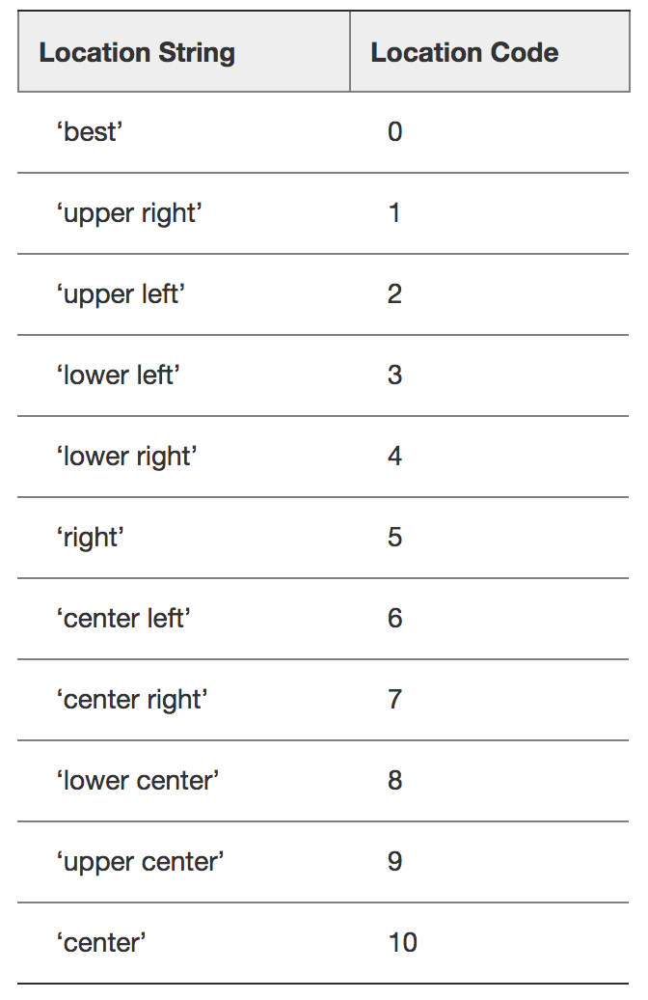

3.2 折线图(plot)与基础绘图功能
学习目标
- 目标
- 知道如何解决中文显示问题
- 知道matplotlib的图结构
- 应用figure实现创建绘图区域大小
- 应用plot实现折线图的绘制
- 应用title,xlabel,ylabel实现标题以及x,y轴名设置
- 应用xticks,yticks实现axes的刻度设置和标注
- 应用savefig实现图形的本地保存
- 应用grid实现显示网格应用axis实现图像形状修改
- 应用legend实现图形标注信息显示
- 应用plt.subplots实现多坐标系的创建
- 知道如何设置多个axes的标题、刻度
- 知道折线图的应用场景
- 应用
- 天气的温度变化显示
3.2.1 折线图绘制与保存图片
为了更好地理解所有基础绘图功能，我们通过天气温度变化的绘图来融合所有的基础API使用
1 matplotlib.pyplot模块
matplotlib.pytplot包含了一系列类似于matlab的画图函数。 它的函数作用于当前图形(figure)的当前坐标系(axes)。
import matplotlib.pyplot as plt
2 折线图绘制与显示
展现上海一周的天气,比如从星期一到星期日的天气温度如下
# 1.创建画布(容器层)
plt.figure(figsize=(10, 10))
# 2.绘制折线图(图像层)
plt.plot([1, 2, 3, 4, 5, 6 ,7], [17,17,18,15,11,11,13])
# 3.显示图像
plt.show()

可以看到这样显示效果并不好，我们可以加入更多的功能：
3 设置画布属性与图片保存
plt.figure(figsize=(), dpi=)
figsize:指定图的长宽
dpi:图像的清晰度
返回fig对象
plt.savefig(path)
# 1.创建画布，并设置画布属性
plt.figure(figsize=(20, 8), dpi=80)
# 2.保存图片到指定路径
plt.savefig("test.png")
- 注意：plt.show()会释放figure资源，如果在显示图像之后保存图片将只能保存空图片。
3.2.2 完善原始折线图1(辅助显示层)
案例：显示温度变化状况
需求：画出某城市11点到12点1小时内每分钟的温度变化折线图，温度范围在15度~18度
效果：

1 准备数据并画出初始折线图
# 画出温度变化图
# 0.准备x, y坐标的数据
x = range(60)
y_shanghai = [random.uniform(15, 18) for i in x]
# 1.创建画布
plt.figure(figsize=(20, 8), dpi=80)
# 2.绘制折线图
plt.plot(x, y_shanghai)
# 3.显示图像
plt.show()

2 添加自定义x,y刻度
plt.xticks(x, **kwargs)
x:要显示的刻度值
plt.yticks(y, **kwargs)
y:要显示的刻度值
# 增加以下两行代码
# 构造x轴刻度标签
x_ticks_label = ["11点{}分".format(i) for i in x]
# 构造y轴刻度
y_ticks = range(40)
# 修改x,y轴坐标的刻度显示
plt.xticks(x[::5], x_ticks_label[::5])
plt.yticks(y_ticks[::5])

如果没有解决过中文问题的话，会显示这个样子：

3 中文显示问题解决
下载中文字体（黑体，看准系统版本）
下载 SimHei 字体（或者其他的支持中文显示的字体也行）
安装字体
linux下：拷贝字体到 usr/share/fonts 下：
sudo cp ~/SimHei.ttf /usr/share/fonts/SimHei.ttfwindows和mac下：双击安装
删除~/.matplotlib中的缓存文件
cd ~/.matplotlib rm -r *修改配置文件matplotlibrc
vi ~/.matplotlib/matplotlibrc将文件内容修改为：
font.family : sans-serif font.sans-serif : SimHei axes.unicode_minus : False
4 添加网格显示
为了更加清楚地观察图形对应的值
plt.grid(True, linestyle='--', alpha=0.5)

5 添加描述信息
添加x轴、y轴描述信息及标题
plt.xlabel("时间")
plt.ylabel("温度")
plt.title("中午11点0分到12点之间的温度变化图示")

3.2.3 完善原始折线图2(图像层)
1 多次plot
需求：再添加一个城市的温度变化
收集到北京当天温度变化情况，温度在1度到3度。怎么去添加另一个在同一坐标系当中的不同图形，其实很简单只需要再次plot即可，但是需要区分线条，如下显示

# 增加北京的温度数据
y_beijing = [random.uniform(1, 3) for i in x]
# 绘制折线图
plt.plot(x, y_shanghai, label="上海")
# 使用多次plot可以画多个折线
plt.plot(x, y_beijing, color='r', linestyle='--', label="北京")
# 显示图例
plt.legend(loc="best")
我们仔细观察，用到了两个新的地方，一个是对于不同的折线展示效果，一个是添加图例。
2 设置图形风格
| 颜色字符 | 风格字符 |
|---|---|
| r 红色 | - 实线 |
| g 绿色 | - - 虚线 |
| b 蓝色 | -. 点划线 |
| w 白色 | : 点虚线 |
| c 青色 | ' ' 留空、空格 |
| m 洋红 | |
| y 黄色 | |
| k 黑色 |
显示图例
- 注意：如果只在plt.plot()中设置label还不能最终显示出图例，还需要通过plt.legend()将图例显示出来。
plt.legend(loc="best")

完整代码：
import random
# 多次plot
# 0.创建数据
x = range(60)
y_shanghai = [random.uniform(15,18) for i in x]
y_beijing = [random.uniform(-5, 5) for i in x]
# 1.创建画布
plt.figure(figsize=(20, 8), dpi=100)
# 2.绘制图
plt.plot(x, y_shanghai, label="上海", color="r", linestyle="--")
plt.plot(x, y_beijing, label="北京")
# 2.1 添加x,y轴的刻度
x_labels_ticks = ["11点{}分".format(i) for i in x]
y_labels_ticks = range(-10, 30)
plt.xticks(x[::5], x_labels_ticks[::5])
plt.yticks(y_labels_ticks[::5])
# 2.2 添加网格线
plt.grid(linestyle="--", alpha=0.5)
# 2.3 添加描述信息
plt.xlabel("时间", fontsize=16)
plt.ylabel("温度", fontsize=16)
plt.title("某城市11点-12点温度变化", fontsize=20)
# 2.4 增加图例
plt.legend(loc="best")
# 3.显示
plt.show()
3.2.4 练一练
练习多次plot流程(从上面复制代码,到自己电脑,确保每人环境可以正常运行),
同时明确每个过程执行实现的具体效果
3.2.5 多个坐标系显示-plt.subplots(面向对象的画图方法)
如果我们想要将上海和北京的天气图显示在同一个图的不同坐标系当中，效果如下：

可以通过subplots函数实现(旧的版本中有subplot，使用起来不方便)，推荐subplots函数
matplotlib.pyplot.subplots(nrows=1, ncols=1, **fig_kw) 创建一个带有多个axes(坐标系/绘图区)的图
Parameters: nrows, ncols : int, optional, default: 1, Number of rows/columns of the subplot grid. **fig_kw : All additional keyword arguments are passed to the figure() call. Returns: fig : 图对象 ax : 设置标题等方法不同： set_xticks set_yticks set_xlabel set_ylabel关于axes子坐标系的更多方法：参考https://matplotlib.org/api/axes_api.html#matplotlib.axes.Axes
注意：plt.函数名()相当于面向过程的画图方法，axes.set_方法名()相当于面向对象的画图方法。
# 需求：画出某城市11点到12点1小时内每分钟的温度变化折线图，温度范围在15度~18度
# 多个axes
# 0.构造数据
x = range(60)
y_shanghai = [random.uniform(15, 18) for i in x]
y_beijing = [random.uniform(1, 14) for i in x]
# 1.创建画布
# plt.figure(figsize=(20, 8))
fig, axes = plt.subplots(nrows=1, ncols=2, figsize=(20, 8), dpi=100)
# 2.图像绘制
# plt.plot(x, y_shanghai, label="上海")
# plt.plot(x, y_beijing, label="北京", linestyle="--", color="r")
axes[0].plot(x, y_shanghai, label="上海")
axes[1].plot(x, y_beijing, label="北京", linestyle="--", color="r")
# 2.1 添加x,y轴刻度
x_ticks_label = ["11点{}分".format(i) for i in x]
y_ticks = range(40)
# plt.xticks(x[::5], x_ticks_label[::5])
# plt.yticks(y_ticks[::5])
axes[0].set_xticks(x[::5])
axes[0].set_yticks(y_ticks[::5])
axes[0].set_xticklabels(x_ticks_label[::5])
axes[1].set_xticks(x[::5])
axes[1].set_yticks(y_ticks[::5])
axes[1].set_xticklabels(x_ticks_label[::5])
# 2.2 添加网格显示
# plt.grid(True, linestyle="--", alpha=0.5)
axes[0].grid(True, linestyle="--", alpha=0.5)
axes[1].grid(True, linestyle="--", alpha=0.5)
# 2.3 添加x,y轴描述和标题
# plt.xlabel("时间")
# plt.ylabel("温度")
# plt.title("中午11点--12点温度变化图", fontsize=25)
axes[0].set_xlabel("时间")
axes[0].set_ylabel("温度")
axes[0].set_title("上海中午11点--12点温度变化图", fontsize=25)
axes[1].set_xlabel("时间")
axes[1].set_ylabel("温度")
axes[1].set_title("北京中午11点--12点温度变化图", fontsize=25)
# 2.4 显示图例
# plt.legend(loc=0)
axes[0].legend(loc=0)
axes[1].legend(loc=0)
# 3.显示
plt.show()
3.2.6 折线图的应用场景
呈现公司产品(不同区域)每天活跃用户数
呈现app每天下载数量
呈现产品新功能上线后,用户点击次数随时间的变化
拓展：画各种数学函数图像
注意：plt.plot()除了可以画折线图，也可以用于画各种数学函数图像

代码：
import numpy as np
# 0.准备数据
x = np.linspace(-10, 10, 1000)
y = np.sin(x)
# 1.创建画布
plt.figure(figsize=(20, 8), dpi=100)
# 2.绘制函数图像
plt.plot(x, y)
# 2.1 添加网格显示
plt.grid()
# 3.显示图像
plt.show()
小结
开头的这几个目标应用全都很重要
- 知道如何解决中文显示问题
- 知道matplotlib的图结构
- 应用figure实现创建绘图区域大小
- 应用plot实现折线图的绘制
- 应用title,xlabel,ylabel实现标题以及x,y轴名设置
- 应用xticks,yticks实现axes的刻度设置和标注
- 应用savefig实现图形的本地保存
- 应用grid实现显示网格应用axis实现图像形状修改
- 应用legend实现图形标注信息显示
- 应用plt.subplots实现多坐标系的创建
- 知道如何设置多个axes的标题、刻度